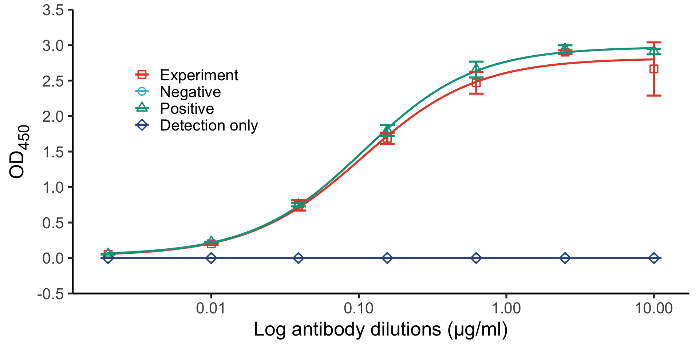
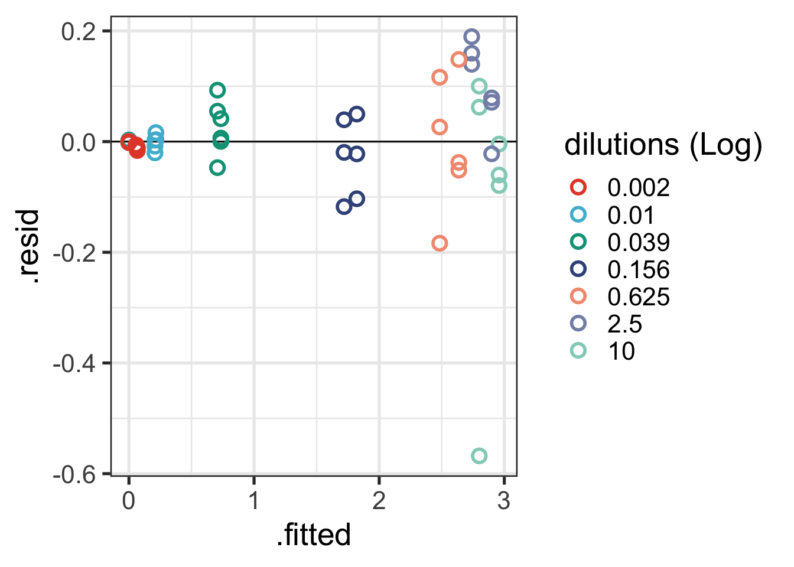

library(drc)
library(tidyverse)
library(openxlsx)
library(broom)
library(ggsci)
library(gt)Introduction
Here is an example of how to fit and analyse ELISA data using ggplot2, drc, and broom.
raw_data <- read.xlsx(xlsxFile = "test-data/elisa-test-triplicate.xlsx",
rowNames = F,
colNames = F,
rows = c(19:26),
cols = c(3:14))Data for plotting
# Compute the antigen blank mean
compute_blank_mean <- raw_data |>
dplyr::mutate(blank_mean = rowMeans(across(X1:X12)))
blank_mean <- compute_blank_mean[8, 13] |> as.numeric() |> round(digits = 4)
# Substract blank_mean from all data
raw_data_minus_blank <- raw_data |>
purrr::map_df(~. - blank_mean)
# Generating antibody dilution values
ab_dilutions <- round(10 / 4^(0:6), 3)
# Full data
final_data <- tibble(ab_dilutions, raw_data_minus_blank[1:7, 1:12]) |>
rename("Positive_1" = X1,"Positive_2" = X2,"Positive_3" = X3,
"Experiment_1" = X4,"Experiment_2" = X5,"Experiment_3" = X6,"NoHisAntigen_1" = X7,"NoHisAntigen_2" = X8,"NoHisAntigen_3" = X9,
"SecondaryOnly_1" = X10,"SecondaryOnly_2" = X11,"SecondaryOnly_3" = X12)
data_pivot <- final_data |>
pivot_longer(!ab_dilutions,
names_to = "Experiment",
values_to = "od450") |>
separate(col = Experiment,
into = c("Experiment", "rep"),
sep = "_")
# compute stats
data_pivot_summary <- data_pivot |>
group_by(ab_dilutions, Experiment) |>
summarise(
od450_sd = sd(od450),
od450_mean = mean(od450)
)
final_data %>% gt()| ab_dilutions | Positive_1 | Positive_2 | Positive_3 | Experiment_1 | Experiment_2 | Experiment_3 | NoHisAntigen_1 | NoHisAntigen_2 | NoHisAntigen_3 | SecondaryOnly_1 | SecondaryOnly_2 | SecondaryOnly_3 |
|---|---|---|---|---|---|---|---|---|---|---|---|---|
| 10.000 | 2.8788 | 2.9538 | 2.8978 | 2.2318 | 2.8618 | 2.8998 | -0.0012 | -0.0022 | -0.0002 | 0.0008 | -0.0022 | -0.0012 |
| 2.500 | 2.8768 | 2.9778 | 2.9698 | 2.9288 | 2.8988 | 2.8788 | -0.0022 | -0.0002 | 0.0008 | -0.0002 | -0.0012 | -0.0012 |
| 0.625 | 2.5848 | 2.5988 | 2.7848 | 2.5098 | 2.2998 | 2.5998 | -0.0012 | 0.0008 | -0.0022 | -0.0012 | -0.0002 | -0.0002 |
| 0.156 | 1.7178 | 1.8708 | 1.7988 | 1.7588 | 1.6998 | 1.6018 | 0.0008 | 0.0008 | 0.0008 | -0.0002 | 0.0008 | -0.0002 |
| 0.039 | 0.7408 | 0.7758 | 0.7348 | 0.7628 | 0.8008 | 0.6608 | -0.0002 | 0.0008 | 0.0028 | -0.0002 | -0.0002 | -0.0022 |
| 0.010 | 0.2318 | 0.2188 | 0.2188 | 0.1878 | 0.1998 | 0.2108 | -0.0002 | 0.0008 | -0.0012 | -0.0002 | -0.0022 | -0.0012 |
| 0.002 | 0.0558 | 0.0508 | 0.0558 | 0.0518 | 0.0508 | 0.0508 | -0.0002 | -0.0012 | -0.0012 | -0.0022 | -0.0012 | -0.0012 |
The final plot
ggplot(data_pivot_summary,
aes(x = ab_dilutions,
y = od450_mean,
color = Experiment,
group = Experiment,
shape = Experiment)) +
geom_point(size = 3, stroke = 1) +
geom_smooth(method = drm,
method.args = list(fct = L.4()),
se = F,
linewidth = 1.0) +
geom_errorbar(aes(ymin = od450_mean-od450_sd,
ymax = od450_mean+od450_sd,
color = Experiment),
size = 1.0,
width = 0.1) +
scale_x_log10() +
scale_y_continuous(limits = c(-0.5, 3.5),
expand = expansion(0),
n.breaks = 7) +
theme_classic(base_size = 20) +
labs(x = "Log antibody dilutions (µg/ml)",
y = "OD~450~") +
scale_color_manual(name = NULL,
labels = c("Experiment", "Negative", "Positive", "Detection only"),
values = c("#E64B35FF", "#4DBBD5FF", "#00A087FF", "#3C5488FF")
) +
scale_shape_manual(name = NULL,
labels = c("Experiment", "Negative", "Positive", "Detection only"),
values = c(0,1,2,5)
) +
theme(axis.title.y = ggtext::element_markdown(),
legend.position = c(0.2, 0.7))
Statistical analysis of the fit
drm_model <- drm(formula = od450~ab_dilutions,
curveid = Experiment,
data = data_pivot,
fct = LL.4(names=c("Slope", "Lower", "Upper", "ED50")))
# tidy(drm_model) %>% gt()
# glance(drm_model) %>% gt()
# augment(drm_model, data = data_pivot) %>% gt()ggplot(augment(drm_model, data = data_pivot),
aes(.fitted, .resid, color = as.factor(ab_dilutions))) +
geom_hline(yintercept = 0) +
geom_point(shape = 21, size = 3, stroke = 1.5) +
theme_bw(base_size = 20) +
labs(color = "dilutions (Log)") +
scale_color_npg()